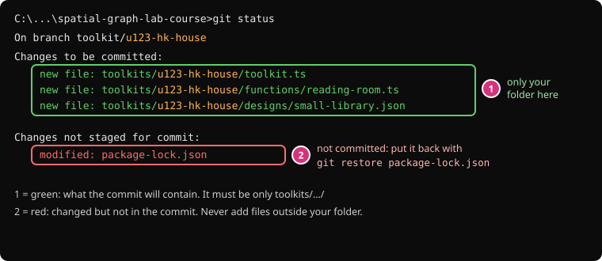
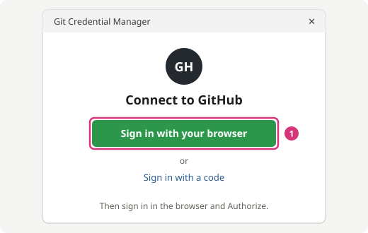

Page 14 of 15 · Help
Git basics
A reference to keep open beside you: the terminal, a few words, and every git command the course uses, with what you should see. Not a sequence: look up the one you need.
Orange text like <your-branch> = replace it with your own, e.g. toolkit/u123-hk-house. Grey buttons like Copy = something to click.
›_The terminal
A window where you type a command and press Enter.
The terminal
A window where you type a command and press Enter.
In VS Code: Terminal › New Terminal. It opens in the folder VS Code has open. Paste one command, press Enter, read the answer, then the next.
Windows

macOS

%.Keys, and the folder the terminal is in
- Paste: Ctrl+V or right-clickCmd+V. ↑ brings back the previous command.
- Ctrl+C stops a command that keeps running, such as
npm run dev, also on a Mac. - The folder: Windows
cdalone prints it; Macpwd. It must end inspatial-graph-lab-course. - “error”, “fatal” or “not recognized”: look it up in Help.
Other ways to open a terminal in a folder (optional)
Windows
Windows 11: in File Explorer, right-click the folder › Open in Terminal. It opens PowerShell: type cmd and press Enter first.
macOS
Finder: right-click the folder › Services › New Terminal at Folder. Not there? Turn it on once in System Settings › Keyboard › Keyboard Shortcuts › Services › Files and Folders.
AaWords
Repository, clone, branch, commit, push, pull.
Words
Repository, clone, branch, commit, push, pull.
| Word | Meaning |
|---|---|
| Repository | A folder with its whole history: on GitHub, and as a copy on your computer. |
| Clone | That copy on your computer, linked to GitHub. |
| Branch | A separate line of work. main is the course's; yours is your own. |
| Commit | A saved snapshot of the files you chose, with a short message. |
| Push | Sends your branch's commits to GitHub. Until you push, they are only on your computer. |
| Pull | Fetches commits from GitHub into the branch you are on. |
Commands
Run every command in VS Code's terminal, in the course folder.
$git clone
Copy a repository from GitHub to your computer, linked to it.
git clone
Copy a repository from GitHub to your computer, linked to it.
git clone <address-of-the-repository>
“Cloning into '…'…”: a new folder with the repository's name, in the folder the terminal is in.
Once per computer: Clone the repository has the course's address and an easier way in VS Code.
$git status
Which branch you are on, and what changed.
git status
Which branch you are on, and what changed.
git status
first line On branch …; then green files (in the next commit), red files (changed, not added), or nothing to commit, working tree clean.

Common problems
$git branch --show-current
The name of the branch you are on.
git branch --show-current
The name of the branch you are on.
git branch --show-current
one line, such as toolkit/u123-hk-house or main. VS Code's bottom left shows the same.
$git pull
Get the newest commits of the branch you are on.
git pull
Get the newest commits of the branch you are on.
git pull
“Already up to date.” or a list of updated files.
On your own branch, use git pull --no-rebase --no-edit to get what you pushed from another computer.
$git switch
Go to a branch that already exists.
git switch
Go to a branch that already exists.
git switch <your-branch>
Switched to branch '…', and VS Code's bottom left shows it.
git switch -c creates a branch first (-c = create). You do that once, on page 09.
Common problems
- “invalid reference” (a typo, or the branch is not made yet)
- “Your local changes … would be overwritten”
$git add
Choose what goes into the next commit: your folder.
git add
Choose what goes into the next commit: your folder.
git add toolkits/<your-toolkit-name>
nothing printed. git status then lists your files in green.
Only your folder. Never git add . or git add -A: they add files outside your folder.
$git commit -m
Save a snapshot of what you added, with a short message.
git commit -m
Save a snapshot of what you added, with a short message.
git commit -m "feat(<your-toolkit-name>): <what-changed>"
[toolkit/… 1a2b3c4] feat(…): … and the number of files changed.
How to write the message
feat(…): for something new, fix(…): for a correction, then a few words, e.g. feat(u123-hk-house): bed count analysis.
Common problems
$git push
Send your branch's commits to GitHub.
git push
Send your branch's commits to GitHub.
git push
… -> … with your branch's name, or “Everything up-to-date” if there was nothing new.
$git push -u
The first push of a new branch.
git push -u
The first push of a new branch.
git push -u origin <your-branch>
* [new branch]. -u remembers GitHub (origin) as the place this branch goes, so later a plain git push is enough.
For your toolkit branch: page 09.
$git pull --no-rebase --no-edit origin main
Bring the course's updates into your branch, without leaving it.
git pull --no-rebase --no-edit origin main
Bring the course's updates into your branch, without leaving it.
git pull --no-rebase --no-edit origin main
a list of changed files, or “Already up to date.”
origin main = the course's main on GitHub; it is merged into the branch you are on. --no-edit keeps an editor from opening. Commit your work first; afterwards run npm ci and your check (page 13).
Common problems
$git restore
Put one file back as it was; --staged takes it out of the next commit.
git restore
Put one file back as it was; --staged takes it out of the next commit.
git restore package-lock.json
nothing printed; git status no longer lists the file.
For another file, type its path as git status shows it. If it is green (added), first:
git restore --staged <path-of-the-file>
One file at a time. Never git restore ., git checkout -- ., git reset --hard or git clean: they also throw away your toolkit work.
$git log --oneline
Your latest commits, one per line.
git log --oneline
Your latest commits, one per line.
git log --oneline -5
five lines such as 1a2b3c4 feat(…): bed count analysis, newest first.
$git diff
Which files changed since your last commit.
git diff
Which files changed since your last commit.
git diff --stat
one line per changed file with + and -. Without --stat it shows every changed line (press q to leave).
Tools
↗Signing in to GitHub when you push
Once, on your first push.
Signing in to GitHub when you push
Once, on your first push.
Signed in to GitHub in VS Code (how)? Then your first push may still open a sign-in window once:
Windows
- A window Connect to GitHub opens: choose Sign in with your browser.
- In the browser, sign in and Authorize. The push continues; Windows remembers it.

macOS
- Push from VS Code's terminal: VS Code asks to sign in with GitHub. Choose Allow.
- In the browser, sign in and authorize VS Code; the push continues.
A terminal asks for a Username and Password? Help.
“Permission denied” or 403: accept the course invitation first (Install the tools › 02).
!VS Code's Source Control panel
The branch icon in VS Code's left bar. The course uses the terminal instead.
VS Code's Source Control panel
The branch icon in VS Code's left bar. The course uses the terminal instead.
Careful with its buttons. Its Commit button offers to stage all changes, which commits files outside your folder (a red ✗ on GitHub). Sync Changes and Publish Branch push for you. If you use it, stage only your folder: right-click each file under toolkits/<your-toolkit-name>/ › Stage Changes, and never answer “Always” to “stage all”.
Already committed everything? Help.